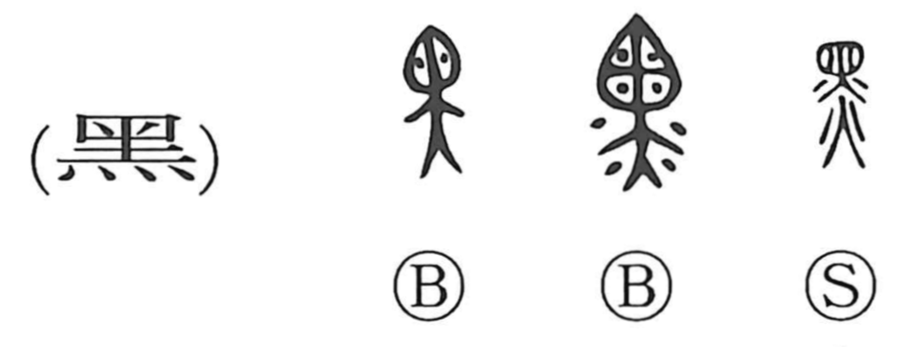

黒

Kun: kuro, kuroi | On: koku
black ・ black color
Explanation
In its original form 黑, the character combines 柬 and 火. Shirakawa reads 柬 as the form of 東 understood here as a bag with something inside. The graph depicts fire applied from below so that the contents are smoked and charred, turning black or into black powder; from this concrete act arises the meaning “black.” It also evokes the method of passing things through flame to blacken them: related characters bring out different facets of the same process—薫 emphasizes the fragrance of the smoke, while 幽 shows applying fire to bundles of threads to impart a black dye. The modern form 黒 retains this sense of blackness born of smoke and charring.